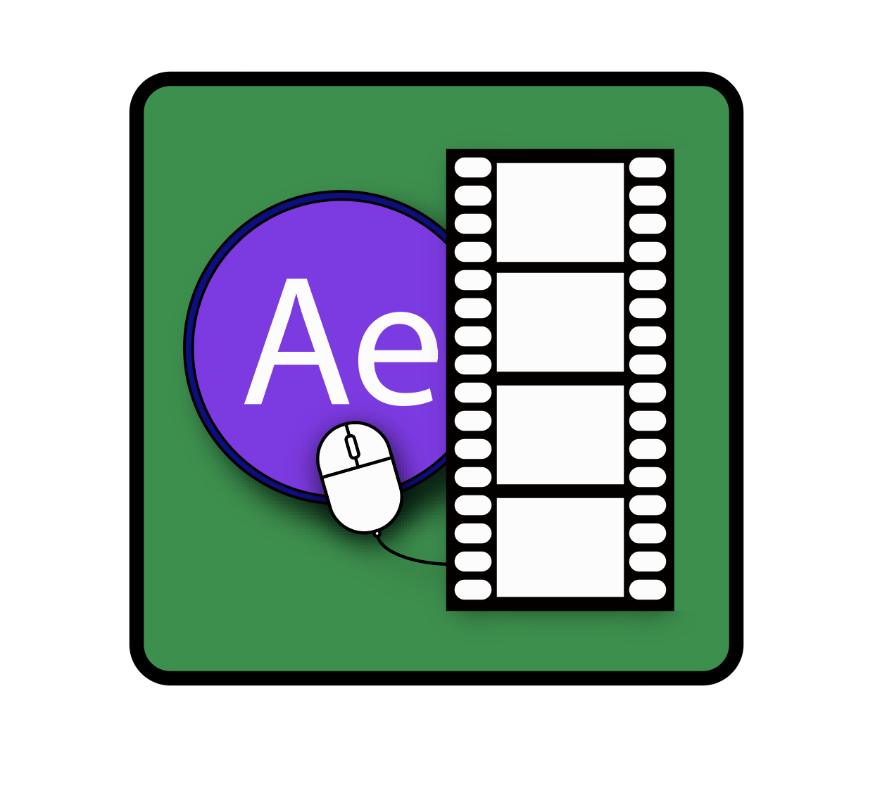

Motion Graphics
Motion graphics, typography, special effects, and animation are used in the industry to market and sell
products and services. Students enhance existing video footage and create brand- or product-based animation
sequences through industry-standard motion graphics software packages. Students work with multiple forms of
media, syncing together audio, video, transitions and added effects to create professional quality video.
(In order to study this course, you will be required MTM6200 Video Foundations)
Furthermore,
Motion graphics are pieces of digital footage animation which create the illusion of motion or
rotation, and are usually combined with audio for use in multimedia projects. Motion graphics are usually
displayed via electronic media technology, but may also be displayed via manual powered technology (e.g.
thaumatrope, phenakistoscope, stroboscope, zoetrope, praxinoscope, flip book). The term distinguishes still
graphics from those with a transforming appearance over time, without over-specifying the form. While any
form of experimental or abstract animation can be called motion graphics, the term typically more
explicitly refers to the commercial application of animation and effects to video, film, TV, and
interactive applications.
Info
Hussein is currently a professor at Algonquin College in the School of Media and Design. He teaches Design, Video and Motion Graphics courses for IMD. Helping his students to thrive and become professionals at work are among his main goals.
Professor
Hussein Tayrani

Grades
A+ 90% - 100% 4.0 A 85% - 89% 3.8 A- 80% - 84% 3.6 B+ 77% - 79% 3.3 B 73% - 76% 3.0 B- 70% - 72% 2.7 C+ 67% - 69% 2.3 C 63% - 66% 2.0 C- 60% - 62% 1.7 D+ 57% - 59% 1.4 D 53% - 56% 1.2 D- 50% - 52% 1.0 F 0% - 49% 0 FSP 0 0
 Visit our Professor's WebsiteServer-Side Development
Having static content works well if
your website only has a few pages. However, today's modern sites
frequently have thousands of pages. Building on the importance of dynamic websites learned through their
experiences with Content Management Systems, students leverage databases to store and output content and
change websites content and interface elements based on user interactions. The focus is on creating dynamic
data and APIs to be used with responsive websites.
In the modern world of web development, learning about server-side development is highly recommended.
Most major websites use some kind of server-side technology to dynamically display different data as
required. For example, imagine how many products are available on Amazon, and imagine how many posts have
been written on Facebook? Displaying all of these using completely different static pages would be
completely inefficient, so instead such sites display static templates (built using HTML, CSS, and
JavaScript), and then dynamically update the data displayed inside those templates when needed, e.g. when
you want to view a different product on Amazon.
Info
Micheal Eisenbraun has been teaching at Algonquin College in the IMD program for 3 years. Currently, I
teach Client Side Web Development and Server Side Web Development. I prefer Client Side Web Development,
because of the excitement and potential JavaScript brings to modern web development.
Micheal Eisenbraun created my first website in 1997, and over the past 20 years, web development and design
has remained a hobby. I am mostly self-taught with very little formal training, and I have over 10 years of
professional experience. However, my focus, currently, is on teaching.
The field of web design and development is ever-changing and if you don’t keep moving, you will fall
behind. It is this realization that lead me to start teaching at Algonquin College in January of 2016. I
have a passion for learning and it fuels my desire to share what I know with others.
Professor
Micheal Eisenbraun

Grades
A+ 90% - 100% 4.0 A 85% - 89% 3.8 A- 80% - 84% 3.6 B+ 77% - 79% 3.3 B 73% - 76% 3.0 B- 70% - 72% 2.7 C+ 67% - 69% 2.3 C 63% - 66% 2.0 C- 60% - 62% 1.7 D+ 57% - 59% 1.4 D 53% - 56% 1.2 D- 50% - 52% 1.0 F 0% - 49% 0 FSP 0 0
Visit our Professor's WebsiteProject Management
Effective management of time, resources, clients, and teams is crucial to the success of any project. Students learn the theory of project management, following industry standard guidelines and best practices. The full project cycle is explored, including planning, managing risks, intellectual property rights, client and team communication, project scope, project documentation and closure. Leadership If we’ve learned anything from years of leading projects, it’s that great leadership is an essential skill to being a good project manager. Our leadership role means we lead and manage teams; setting the vision, motivating the team, serving them, coaching them and inspiring others. Communication One of the essential skills for project management is the ability to communicate well – understanding and being understood. Great communication is the crux of any relationship and so the effectiveness of a project manager’s communication has an impact not only on the project team but the client and stakeholders too. Time Management As project managers, a huge part of our job is determining and communicating how other people will spend their time. But it’s equally important to be aware of how we are manage our own time. Risk Management Project managers are always an easy target when projects don’t go to plan. Regardless of the circumstances, everyone wonders whether the project manager could have foreseen and prevented the risk before it became an issue. Negotiation Skills Project management is somewhat like politics; it often brings together a disparate group of people, often with competing interests, and our job is to get these different interests on the same page, so that we can accomplish project goals. In other words, a good project manager must be an excellent negotiator.
Info
Adam Jarvis: I presume this is related to me being employed. In that case, I started as a PA in September of 2008 with IMD (and also my first position at Algonquin), then began teaching in January of 2009, in IMD but also in Journalism. I taught at Algonquin until the winter semester of 2016, then took a break and explored other things for a few years, and finally returned to teaching in this semester. I have taught many courses across many different programs (including IMD, IMM - the one year program, Journalism, and others). I've attached a full course list for your interest, but most probably isn't relevant to what you are doing. Typically I teach in courses that have some sort of coding element, but not always. My favourites have definitely been the HTML and Javascript courses. I enjoy coding and find teaching it to be quite fun as well.
Professor
Adam Jarvis

Grades
A+ 90% - 100% 4.0 A 85% - 89% 3.8 A- 80% - 84% 3.6 B+ 77% - 79% 3.3 B 73% - 76% 3.0 B- 70% - 72% 2.7 C+ 67% - 69% 2.3 C 63% - 66% 2.0 C- 60% - 62% 1.7 D+ 57% - 59% 1.4 D 53% - 56% 1.2 D- 50% - 52% 1.0 F 0% - 49% 0 FSP 0 0
Visit our Professor's WebsiteWeb Production
Despite the variety of websites found
online today there are many common problems that every developer needs to solve. Building on the web design
and development skills learned in the first two terms students learn how to increase their productivity by
using a variety of industry standard tools and frameworks.
Relationship to Essential Employability Skills
This course contributes to your program by helping you achieve the following Essential Employability
Skills:
EES 3 Execute mathematical operations accurately. (T, A,)
EES 6 Locate, select, organize and document information using appropriate technology and information
systems. (T, A,)
EES 7 Analyze, evaluate and apply relevant information from a variety of sources. (T, A,)
Course Learning Requirements/Embedded Knowledge and Skills
When you have earned credit for this course, you will have demonstrated the ability to:
1.) Manage a code repository using an online tool such as GitHub.
Understand and utilise an online code database.
Explain the methods and techniques used to load data into web applications.
2.) Create a responsive website using modern web development frameworks.
Create a scaleable website that is semantic, accessible, and visually appealing.
3.) Produce and edit multiple stylesheets for a responsive web site using CSS preprocessors.
Understand and apply stylesheets for a variety of visual affects
4.) Create animated effects on a web site using CSS3 features supported across all modern
browsers.
Apply animated effects to websites while maintaining cross browser compatability.
5.) Increase code reuse and efficiency by leveraging JavaScript libraries.
Understand and apply pre-exsisting code snipits.
Info
Email
Algonquin College provides all full-time students with an e-mail account. This is the address that will be
used when the College, your professors, or your fellow students communicate important information about
your program or course events. It is your responsibility to ensure that you know how to send and receive
e-mail using your Algonquin account and to check it regularly.
Students with Disabilities
If you are a student with a disability, you are strongly encouraged to make an appointment at the Centre
for Accessible Learning to identify your needs. Ideally, this should be done within the first month of your
program, so that a Letter of Accommodation (LOA) can be provided to your professors. If you are a returning
student, please ensure that professors are given a copy of your LOA each semester.
Retroactive Accommodations
Students are expected to meet evaluation and completion deadlines as stated in course outline and course
section information documents. In circumstances where evaluation and/or completion deadlines are missed or
student performance has been affected by a temporary or permanent disability (including mental health),
interim or retroactive accommodations may be considered. In such instances, please consult your course
faculty member. For other situations where deferral of evaluations may be warranted, please refer to
college policy AA21.
© 2018 Algonquin College of Applied Arts & Technology MTM6330 - Web Production, Page 4/5
Academic Integrity & Plagiarism
Adherence to acceptable standards of academic honesty is an important aspect of the learning process at
Algonquin College. Academic work submitted by a student is evaluated on the assumption that the work
presented by the student is his or her own, unless designated otherwise. For further details consult
Algonquin College Policies AA18: Academic Dishonesty and Discipline and AA20: Plagiarism
Student Course Feedback
It is Algonquin College’s policy to give students the opportunity to share their course experience by
completing a student course feedback survey for each course they take. For further details consult
Algonquin College Policy AA25: Student Course Feedback
Use of Electronic Devices in Class
With the proliferation of small, personal electronic devices used for communications and data storage,
Algonquin College believes there is a need to address their use during classes and examinations. During
classes, the use of such devices is disruptive and disrespectful to others. During examinations, the use of
such devices may facilitate cheating. For further details consult Algonquin College Policy AA32: Use of
Electronic Devices in Class
Transfer of Credit
It is the student’s responsibility to retain course outlines for possible future use to support
applications for transfer of credit to other educational institutions.
Professor
Robert L. McKenney

Grades
A+ 90% - 100% 4.0 A 85% - 89% 3.8 A- 80% - 84% 3.6 B+ 77% - 79% 3.3 B 73% - 76% 3.0 B- 70% - 72% 2.7 C+ 67% - 69% 2.3 C 63% - 66% 2.0 C- 60% - 62% 1.7 D+ 57% - 59% 1.4 D 53% - 56% 1.2 D- 50% - 52% 1.0 F 0% - 49% 0 FSP 0 0
Visit our Professor's Website